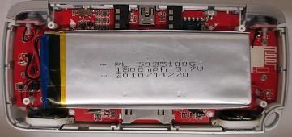
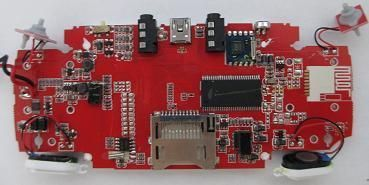
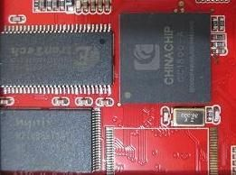
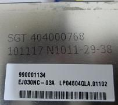
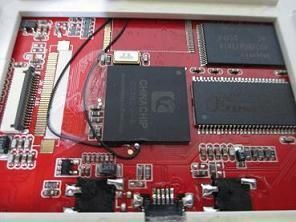
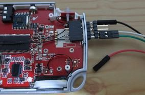

目前GA330掌機尚未有相關資料手冊釋出，導致目前還沒有高手可以將Linux系統移植到該款掌機身上，司徒也相當不解，為何原廠不將資料手冊釋出，讓更多高手可以移植更多的模擬器和軟體到該掌機身上，而沒有相關資料手冊的輔助，想要成功移植Linux系統到GA330掌機身上，只能使用逆向工程的手法，該做法就是利用官方釋出的韌體做反組譯的動作，藉此瞭解暫存器的應用，要全盤理解是不可能的，但是卻是唯一的機會，而這樣的做法是一個相當大的挑戰，但是，越大的挑戰，司徒便會更想去嘗試瞭解，因此，在進行逆向工程之前，我們需要UART的輔助，但是，GA330掌機預設並沒有將UART拉出來，因此需要手動焊線製作，司徒就先介紹一下如何焊接UART線
從背後的四顆螺絲拆解就可以看到PCB板、電池






ChinaChip IPL V1.04 Data : Jun 08 2010 Time : 17:31:33 SDRAM CAPACITY IS: 04000000 ADD7949A 000074FF Total Size = 0x00047D60 !!! Ecc Correct Error !!! !!! Ecc Correct Error !!! !!! Ecc Correct Error !!! !!! Ecc Correct Error !!! !!! Ecc Correct Error !!! !!! Ecc Correct Error !!! !!! Ecc Correct Error !!! !!! Ecc Correct Error !!! ..Loader Size = 0x00037D60 ChinaChip SPL V1.14 Data : Aug 06 2010 Time : 16:02:01 loader is normal mode... loader_burning = 0 Battery Voltage = 4107. g_poweron_vol = 3550 ccpmp_config Ver : 1.08 !!! LCD Set Init !!!! LCD Set Init Over !!!! ccpmp_config.firmware_name = A330LE.HXF ... ccpmp_config.update_key = 0x81 ... ccpmp_config.lcm_name = LCM_TB_TD030WHEA1_320_240 ... LCD Init Begin. CN2009P_CFG.DL Data : Dec 30 2010 Time : 15:11:29 ****** Enter LCD Init ****** wHCLKDIV = 1, wLCLKDIV = 0 num = 0, flag = 0 num = 1, flag = 0 num = 2, flag = 0 num = 3, flag = 0 wHCLKDIV = 1, wLCLKDIV = 0 num = 1, flag = 0 num = 2, flag = 0 num = 3, flag = 0 wHCLKDIV = 1, wLCLKDIV = 0 num = 1, flag = 0 num = 2, flag = 0 num = 3, flag = 0 wHCLKDIV = 1, wLCLKDIV = 0 num = 1, flag = 1 update key bDevMode = 0 ccpmp_config.load_mode = 0 ret = 0x00102878 usb_mode = 1 NAND ID: ADD7949A 00007442 A0FFFFFF 0000FFFF 80FFFFFF 0000FFFF A0FFFFFF 0000FFFF 80FEFFFF 0000FFFF Nand manufacturer 0: Hynix Nand type 0: 4GB Nand manufacturer 1: Unknown Nand type 1: Unknown Nand manufacturer 2: Unknown Nand type 2: Unknown Nand manufacturer 3: Unknown Nand type 3: Unknown Nand manufacturer 4: Unknown Nand type 4: Unknown Nand manufacturer 5: Unknown Nand type 5: Unknown Nand manufacturer 6: Unknown Nand type 6: Unknown Nand manufacturer 7: Unknown Nand type 7: Unknown (dev 0)offset = 8192. (dev 0)size = 131072. (dev 0)nb_block = 64. xxx -- nf_bi[0] 2048. 000 -- sta_block = 4, sta_chip = 0, end_chip = 2048. xxx -- aaa. 001 -- end_block = 68, sta_chip = 0, end_chip = 2048. xxx -- bbb. xxx -- 002. (dev 0)start chip = 0. (dev 0)start block = 4. (dev 0)end chip = 0. (dev 0)end block = 67. _this->start_chip = 0, _this->end_chip = 0. nand_scan_blocks -- 000. nand_scan_blocks -- 001. block range of partition 4 ~ 68 on chip 0. Found bbt at block 4, ver:0x0001. bklight level: 00000000 bk value = 66 update_succ = 0 ccpmp_config.load_mode = 0 hxf_exist = 0 Play Logo on Music !!! animation total frame = 1. CC1800 Run OS .... nandc0 - chip0, ID: ad d7 94 9a 74 42 nandc1 - chip0, ID: 80 fe ff ff ff ff nandc1 - chip2, ID: 80 ff ff ff ff ff nandc1 - chip3, ID: a0 fe ff ff ff ff gDiskCapacity = 7946240 begin fs_init... begin cc_ntfs_init ... cc_ntfs_init ok ... fs init OK. s_wLongPressGOHOME -1 SWITCHOFF KEY register -1 RMT 17 ) LCD Set Init !!!! LCD Set Init Over !!!! OK: bit_time = 1465, Rx_data = 0x180d3400, Org_data = 0x180d3400. Init UDC in otg init 3-14 out otg init OS Heap Information: Total Size: 0x00e00000 Used Size: 0x002c1098 Free Size: 0x00b3ef68 AP Heap Information: Total Size: 0x02000000 Used Size: 0x0063b818 Free Size: 0x019c47e8 OS Heap Information: Total Size: 0x00e00000 Used Size: 0x002c1104 Free Size: 0x00b3eefc AP Heap Information: Total Size: 0x02000000 Used Size: 0x0063b818 Free Size: 0x019c47e8 OS Heap Information: Total Size: 0x00e00000 Used Size: 0x002c1104 Free Size: 0x00b3eefc AP Heap Information: Total Size: 0x02000000 Used Size: 0x006ac1a8 Free Size: 0x01953e58